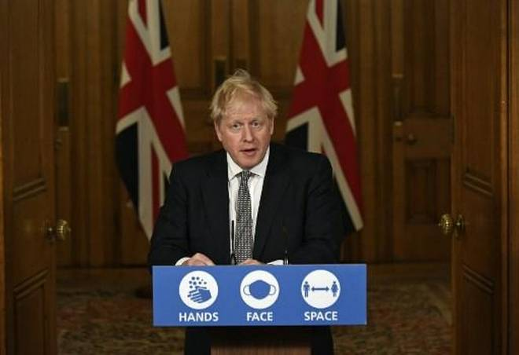

Coronavirus | Boris Johnson locks down England as U.K. COVID-19 cases pass 1 million
REUTERS
REUTERSLONDON, NOVEMBER 01, 2020 01:03 IST
UPDATED: NOVEMBER 01, 2020 01:05 IST
Mr. Johnson said that the one-month lockdown across England would kick in at a minute past midnight on
Thursday morning and last until December 2

Mr. Johnson said that the one-month lockdown across England would kick in at a minute past midnight on
Thursday morning and last until December 2
Prime Minister Boris Johnson ordered England back into a national lockdown after the United Kingdom
passed the milestone of one million COVID-19 cases and a second wave of infections threatened to
overwhelm the health service.
The United Kingdom, which has the biggest official death toll in Europe from COVID-19, is grappling with
more than 20,000 new coronavirus cases a day and scientists have warned the ”worst case” scenario of
80,000 dead could be exceeded.
Mr. Johnson, at a hastily convened news conference in Downing Street after news of a lockdown leaked to
local media, said that the one-month lockdown across England would kick in at a minute past midnight on
Thursday morning and last until December 2.
In some of the most onerous restrictions in Britain's peacetime history, people will only be allowed to
leave home for specific reasons such as education, work, exercise, shopping for essentials and medicines
or caring for the vulnerable.
“Now is the time to take action because there is no alternative,” Mr. Johnson said, flanked by his Chief
Medical Officer, Chris Whitty, and his Chief Scientific Adviser, Patrick Vallance.
The government will revive its emergency coronavirus wage subsidy scheme to ensure workers who are
temporarily laid off during a new England-wide lockdown receive 80% of their pay.
Essential shops, schools, and universities will remain open, Mr. Johnson said. Pubs and restaurants
willbe shut apart from for takeaways. All non-essential retail will close.
Mr. Johnson's imposition of stricter curbs came after scientists warned the outbreak was going in
the
wrong direction and that action was needed to halt the spread of the virus if families were to have
any
hope of gathering at Christmas.
Mr. Johnson was criticised by political opponents for moving too slowly into the first national
lockdown, which stretched from March 23 to July 4. He fell ill with COVID-19 in late March and was
hospitalised in early April.
The measures bring England into alignment with France and Germany by imposing nationwide
restrictions
almost as severe as the ones that drove the global economy this year into its deepest recession in
generations.
So far the United Kingdom has reported 46,555 COVID-19 deaths - defined as those dying within 28
days of
a positive test. A broader death measure of those with COVID-19 on their death certificates gives
the
toll as 58,925.
The United Kingdom has the world's fifth largest official death toll, after the United States,
Brazil,
India and Mexico, according to a Johns Hopkins University tally.